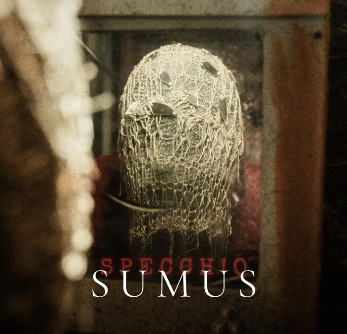

SUMUS
Sempre Un Mai Un Sempre: il titolo è l'acronimo del verso che torna nel ritornello — la mia vita è mai un sempre e sempre un mai. Ed è anche la parola latina: siamo. Un tributo al rap old e new school, fra citazioni nascoste, classicismi ed extrabeat.